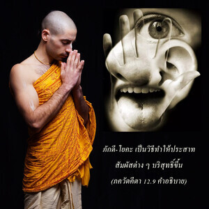

อรฺชุน ที่รัก โอ้ ผู้ชนะความร่ำรวย หากไม่สามารถตั้งจิตมั่นอยู่ที่ข้าโดยไม่เบี่ยงเบน เธอก็ปฏิบัติตามหลักธรรมของ ภกฺติ - โยค เช่นนี้ เธอจะพัฒนาความปรารถนาที่จะบรรลุถึงข้า

โศลกนี้แสดงให้เห็น ภกฺติ-โยค สองวิธี วิธีแรกสำหรับผู้ที่ได้พัฒนาความยึดมั่นด้วยความรักทิพย์ต่อองค์กฺฤษฺณบุคลิกภาพสูงสุดแห่งพระเจ้าแล้วอย่างแท้จริง และอีกวิธีหนึ่งสำหรับผู้ที่ยังไม่พัฒนาความยึดมั่นต่อองค์ภควานฺด้วยความรักทิพย์ สำหรับกลุ่มที่สองนี้มีกฎเกณฑ์ต่างๆที่กำหนดไว้ซึ่งสามารถนำไปปฏิบัติตามได้ และในที่สุดจะพัฒนามาถึงระดับแห่งความยึดมั่นต่อองค์กฺฤษฺณ
ภกฺติ-โยค เป็นวิธีทำให้ประสาทสัมผัสต่างๆบริสุทธิ์ขึ้น ในความเป็นอยู่ปัจจุบันประสาทสัมผัสไม่บริสุทธิ์เสมอเนื่องจากมาคลุกคลีอยู่ในการสนองประสาทสัมผัส แต่จากการปฏิบัติ ภกฺติ-โยค ประสาทสัมผัสเหล่านี้ถูกทำให้บริสุทธิ์ขึ้นได้ และในระดับที่บริสุทธิ์เราจะมาสัมผัสกับองค์ภควานฺโดยตรง ในความเป็นอยู่ทางวัตถุนี้เราอาจปฏิบัติรับใช้บางสิ่งบางอย่างให้เจ้านายบางคนแต่มิได้ทำไปด้วยความรักเจ้านายจริง เราเพียงแต่รับใช้เพื่อให้ได้เงินมาเท่านั้นเจ้านายก็ไม่มีความรักเช่นเดียวกัน ได้แต่รับการรับใช้จากเราและจ่ายเงินให้ ดังนั้นจึงไม่มีอะไรเกี่ยวข้องกับความรักเลย แต่สำหรับชีวิตทิพย์เราต้องพัฒนามาถึงระดับแห่งความรักที่บริสุทธิ์ ระดับแห่งความรักที่บริสุทธิ์นั้นบรรลุได้ด้วยการปฏิบัติการอุทิศตนเสียสละรับใช้ซึ่งใช้ประสาทสัมผัสที่ปัจจุบันมีอยู่ปฏิบัติการ
ปัจจุบันความรักแห่งองค์ภควานฺนี้ซ่อนเร้นอยู่ภายในหัวใจของทุกๆคน ความรักแห่งพระองค์จึงปรากฏออกมาในรูปแบบต่างๆกัน แต่ที่ปรากฏมีมลทินเนื่องจากมาสัมพันธ์กับวัตถุ ดังนั้นต้องทำให้หัวใจที่เราได้คบหาสมาคมกับวัตถุนั้นบริสุทธิ์ขึ้น จากนั้นความรักองค์กฺฤษฺณที่ซ่อนเร้นอยู่ภายในตามธรรมชาติของเราจะได้รับการฟื้นฟูขึ้นมา นี่คือวิธีการทั้งหมด
ในการปฏิบัติตามหลักธรรมของ ภกฺติ-โยค ภายใต้การแนะนำของพระอาจารย์ทิพย์ผู้มีความชำนาญ เราควรปฏิบัติตามหลักธรรมบางประการ เช่น ตื่นนอนแต่เช้าตรู่ อาบน้ำ เข้าวัด ถวายบทมนต์ และสวดภาวนา หเร กฺฤษฺณ จากนั้นไปเก็บดอกไม้มาถวายให้พระปฏิมา ปรุงอาหารและถวายให้พระปฏิมา รับประทานอาหารทิพย์ ( ปฺรสาทมฺ) ฯลฯ มีกฎเกณฑ์ต่างๆที่ควรปฏิบัติตาม เราควรสดับฟัง ภควัท-คีตา และ ศฺรีมทฺ-ภาควตมฺ จากเหล่าสาวกผู้บริสุทธิ์เสมอ การปฏิบัติเช่นนี้จะช่วยทุกคนให้เจริญขึ้นมาถึงระดับแห่งความรักองค์ภควานฺ หลังจากนั้นเราจะมั่นใจในความเจริญก้าวหน้าไปสู่อาณาจักรทิพย์แห่งองค์ภควานฺ การปฏิบัติ ภกฺติ-โยค ภายใต้กฎเกณฑ์จากการนำทางของพระอาจารย์ทิพย์นี้จะนำให้เราไปถึงระดับแห่งความรักองค์ภควานฺอย่างแน่นอน